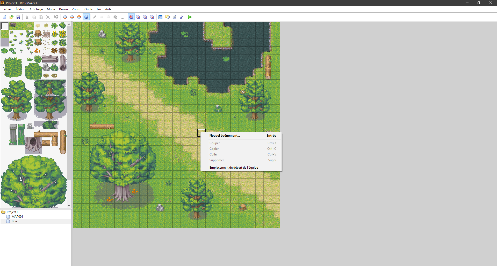
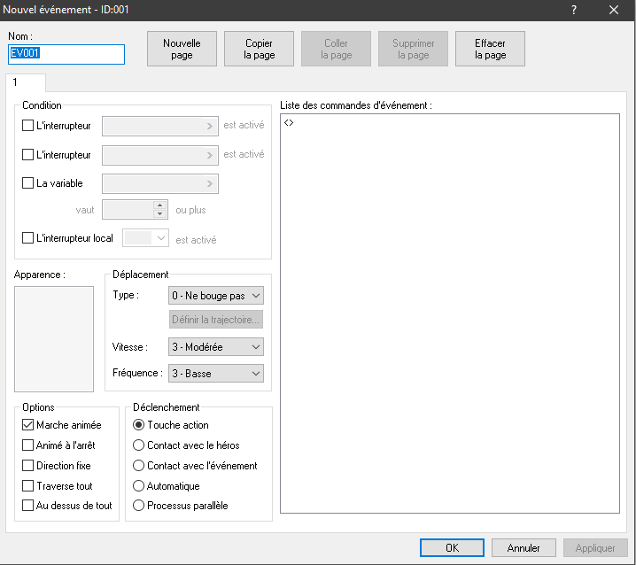
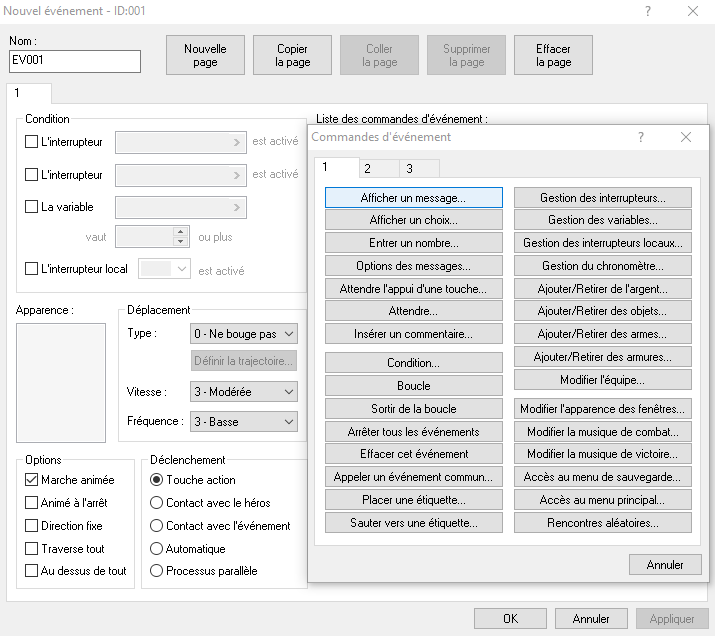
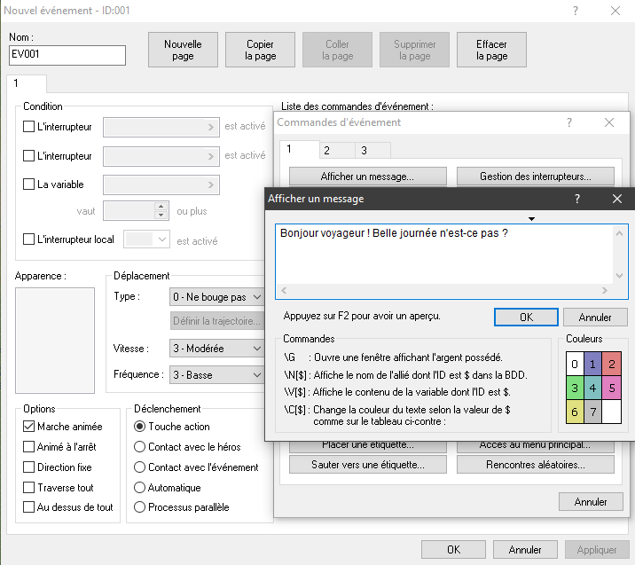
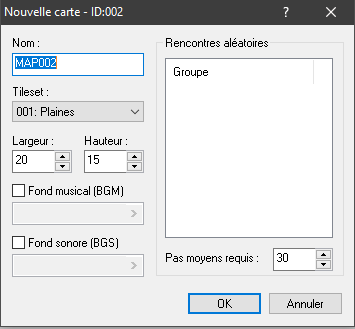
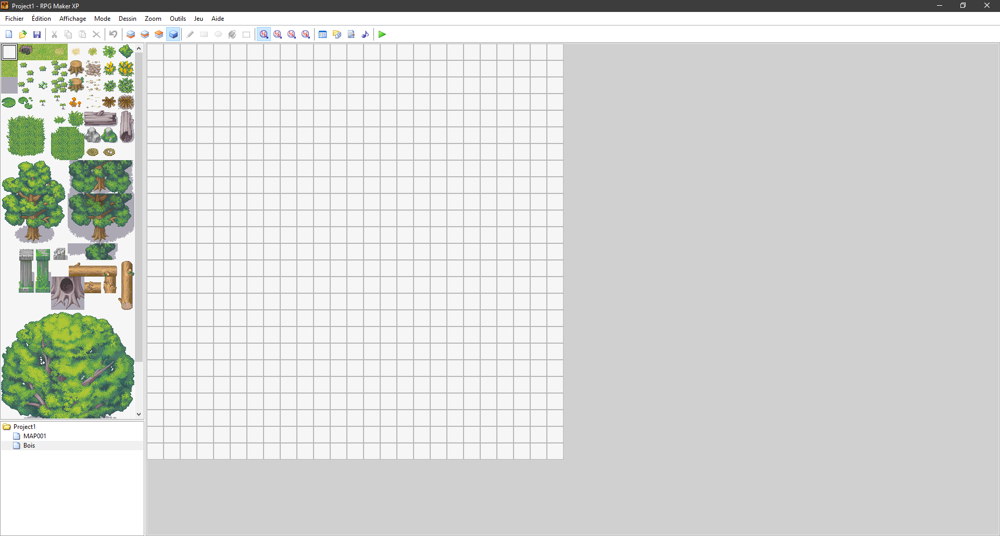
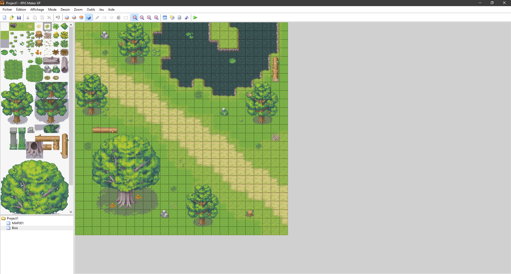

Nous allons maintenant voir une fonction importante de RPG Maker XP, la couche événement, elle permet de créer comme son nom l'indique des événements, vous vous êtes probablement demandé ce que le "S" signifiait dans la première carte que nous avons créé, en réalité, cela définit le point d'apparition de votre personnage lorsque vous lancerez le jeu, c'est un événement. Pour le changer il vous suffit de cliquer sur une case (celle que vous désirez) et de cliquer sur "Emplacement de départ de l'équipe"  Une fois cela fait, vous devriez voir un "S", il marque le point d'apparition de votre personnage. Allons désormais dans du concret, cliquer sur un tile puis sur "Nouvel événement...". Vous devriez arriver sur cette interface.  L'interface à l'air compliquée, et elle l'est ! Alors accrochez-vous. On peut découper cette interface en 3 parties, d'abord la plus grande, celle de droite permet d'effectuer des commandes, si on double clique dessus, ceci apparaît.  Pour notre exemple nous allons créer la commande "Afficher un message...". Dans la boîte de dialogue nous allons écrire "Bonjour voyageur ! Belle journée n'est-ce pas ?". Le but de cet événement est de créer un personnage non-joueur, abrégé en PNJ (NPC en anglais) qui à chaque fois que le joueur interagira avec ce PNJ, la boîte de dialogue s'ouvrira avec le message qui s'affichera dedans.  Maintenant, nous allons créer une deuxième carte que nous allons nommer "Bois", cette fois-ci avec un tileset différents, afin de vous montrer les différentes possibilités qu'offre ce logiciel.  Pour l'exemple nous allons choisir le tileset "002: Bois" et nous allons aussi changer la taille de la carte pour mettre 25 en hauteur et 25 en largeur. Après avoir indiqué vos paramètres et avoir accepté, vous devriez avoir quelque chose de similaire.  Nous allons donc refaire les mêmes étapes que nous avons vu précédemment, d'abord avec la couche 1 il nous fait un sol, puis avec la couche 2 ajouter du relief avec des arbres et la couche 3 pour les finitions. (Pour remplir une grande surface rapidement on peut utiliser l'outil rectangle vu à la page précédente.) Après avoir décoré notre carte nous obtenons ce résultat.  Maintenant que nous avons une deuxième carte, il faudrait peut-être ajouter un peu de vie, d'événements dirais-je même !